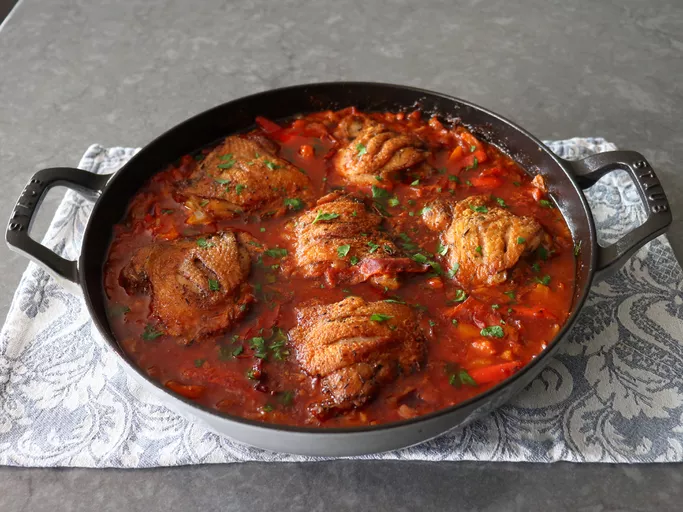

Home
Roman Chicken

Description
Roman-style chicken recipe delivers one of the best bites of braised chicken you will ever enjoy. Tomatoes and bell peppers make the sauce, and you'll never believe how good this is over olive oil mashed potatoes
It's a flavorful dish that typically fearures chicken thighs or breasts cooked with variety of herbs, vegetables, and sometimes wine of tomatoes.
It is a traditional Italian dish that can be prepared in different ways, but usually include Ingredients like garlic.
Ingredients
- 6 large bone-in skin-on chicken thighs (about 2 ½ to 3 pounds)
- 2 tablespoons olive oil, divided
- 2 ½ teaspoons kosher salt, plus more to taste
- 1/2 teaspoon freshly ground black pepper
- 1 pinch cayenne pepper
- 1/2 teaspoon dried thyme
- 1/2 teaspoon dried rosemary
- 1/2 teaspoon dried oregano
- 1 yellow onion, sliced
- 4 cloves garlic, minced
- 1 tablespoon capers
- 1 anchovy filet
- 1 cup white wine
- 2 cups crushed tomatoes or tomato sauce
- 1/2 cup water
- 1 teaspoon chicken bouillon paste
- 3 red or orange bell peppers, seeded and cut into 3/8-inch strips
- 3 slices prosciutto, cut into strips
- chopped Italian parsley (optional)
Steps
- Use a sharp knife to make 2 cuts through the skin in the center of the thigh, down to the bone, about one inch apart from each other. Once cut, transfer thighs into a mixing bowl.
- Drizzle with 2 teaspoons olive oil, and season with salt, black pepper, cayenne, and dried herbs. Use tongs to toss until very thoroughly coated. Wrap and refrigerate chicken for at least 2 hours, or up to 12 hours
- Preheat the oven to 350 degrees F (180 degrees C).
- Heat remaining olive oil in a large oven-safe skillet on medium-high heat. Add chicken, skin side down, and cook until a deep golden brown crust has formed, 5 to 6 minutes. Turn chicken over and cook for 3 minutes more. Turn off heat, remove chicken to a plate, and set aside.
- Turn heat back on to medium, and add onions. Cook, stirring, for a few minutes or until the onions just begin to soften. Make a space in the center of the pan, and add garlic, capers, and anchovy. Cook for about 1 minute, while stirring and smashing with the edge of a wooden spoon or spatula.
- Pour in wine, and raise the heat to high. Cook, stirring occasionally, for a few minutes until the wine reduces by about half. Add tomatoes, water, and chicken bouillon paste; stir to combine. Return mixture to a boil, and cook, stirring occasionally, until liquid reduces slightly, 3 to 4 minutes.
- Add sliced peppers, and mix in evenly. Scatter about 3/4 of prosciutto slices evenly over the top. Place chicken thighs back on top, spaced evenly, skin side up. Place remaining prosciutto slices between chicken pieces
- Bake in the preheated oven until the chicken is cooked through and the top is nicely browned, 40 to 45 minutes.
- Top with parsley and serve immediately on olive oil mashed potatoes, rice, or pasta.